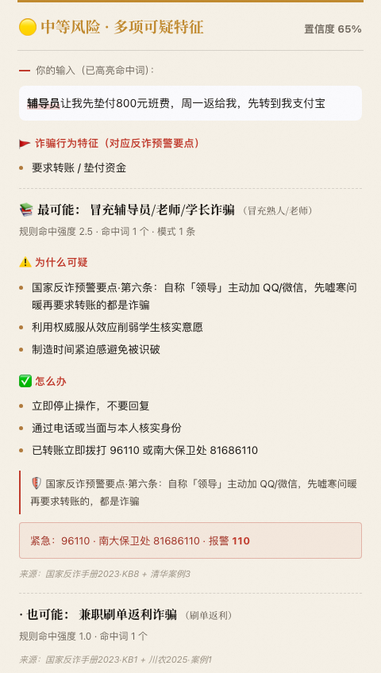
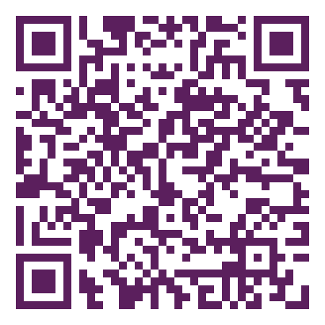
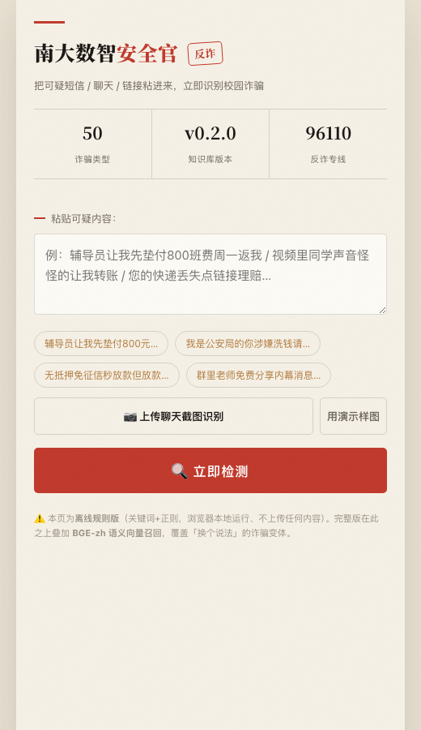

校园场景化反诈 AI Agent
把可疑短信 / 聊天 / 链接粘进来，立即识别校园诈骗
作者 · 南京大学商学院 · 经济学（拔尖计划）
github.com/hjjbh1314/nju-guardian · hjjbh1314.github.io/nju-guardian
南开大学一学生闲鱼买相机，
被诱导开共享屏幕、刷流水，
分 22 次转账被骗。
天津近半年单笔涉案金额最高 · 据新浪科技 / IT之家 / 警情通报，2026-06-05
同样的话术输入我们的系统 → 高危 · 共享屏幕诈骗，当场识别。
个人难以记全所有骗术，
我们将其汇聚为一个随身的反诈大脑，
并让它持续自我生长。
汇总全部类型 · 粘进去即查 · 采集→结构化→校验→去重→人工审核→可定时更新

纯前端 H5。端侧三路检测在手机浏览器本地完成、默认不上传。
点 「🤖 AI 深度研判」可交大模型多轮研判（仅此操作上传）
上传仅含这一条文本，经加密代理转发、不留存不入库，密钥保管在服务端
检测逻辑与完整版规则路一致 · 实测 12/12 命中对齐

手机扫码 · 现场即可体验
端侧本地检测 · 三路融合（规则 ⊕ 语义 ⊕ 行为红旗）· 秒级响应

① 粘贴可疑短信 / 聊天 / 链接
② 秒出风险研判卡片
① 端侧三路引擎 · 毫秒 / 离线 / 可解释
② LLM Agent · 难例升级（DeepSeek）
风险定级 ＝ 案例研判 与 行为研判 取更高者 —— 已知套路、未知变体都不漏
案例研判：综合分 ＝ 规则 ＋ 2.5× 语义 · 行为研判：红旗 强3 / 中2 / 弱1 计分，≥2 强或累计 ≥6 判高危 · 缺模型自动降级 TF-IDF
30 条口语化校园诈骗样本 · Top-3 召回率
规则路（关键词+正则）
80%
Top-1 准确率 70%
双路融合（＋BGE 向量）
100%
Top-1 准确率 87% · 补回 6 条语义变体
未知骗局预警覆盖（库中无对应类型） 双路 70% → 三路（＋行为红旗）100%，净增 +30%
两项均 CI 内置回归闸门，改库即自动复测 · python demo/tests/eval.py
前五步全自动——现场可一键触发，也支持 GitHub Actions 定时采集（按需开启）。
关键的一道关是人工审核：
统一 12 字段结构化（关键词 / 正则 / 话术 / 手法 / 处置 / 公开来源） · 对齐反诈预警要点 · 高 / 中 / 低风险分级 · 随采集流水线持续增长
把现场每一位观众，都变成案例库的来源——它会越用越全、越用越准。
开源 MIT · 来源白名单 · 必须公开可核验 · 不收匿名自述与群截图 · 自动化测试与持续集成
年轻人是电诈主战场，校园是反诈刚需
自上而下漏斗测算 · 公开数据为据，关键假设均有基准且从严取值
2086 万 本科生 × 0.5% 年发案 × ¥7500 案均损失 ＝ ¥7.8 亿 / 年 大学生电诈损失规模
一套会自己长大的反诈系统 · 用得越多，越护得住
让校园诈骗，无所遁形
扫码体验
紧急拨 96110 反诈专线 · 110 报警 · 南大保卫处 81686110
作者 · 南京大学商学院 · 经济学（拔尖计划）
开源 github.com/hjjbh1314/nju-guardian · 体验 hjjbh1314.github.io/nju-guardian